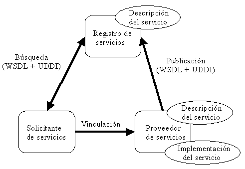

| Concepto: Servicios web para J2EE |
 |
|
| Elementos relacionados |
|---|
Qué es un servicio web de J2EEUn servicio web se organiza alrededor de una arquitectura con tres elementos principales: el registro de servicios, el proveedor de servicios y el solicitante de servicios. En la figura 1 se proporciona una visión general de las relaciones entre estos distintos elementos.
 El proveedor de servicios comienza definiendo la interfaz de servicio mediante un documento de descripción de servicio WSDL (Web Services Description Language). Esta definición abstracta se asocia con enlaces de codificación y transporte, así como a una dirección en una descripción de servicio concreta para definir una instancia de servicio concreta que también se denomina punto final de servicio o puerto. Esta descripción concreta se puede publicar en un registro de servicios como UDDI (Universal Description, Discovery and Integration) al que podrá acceder cualquier solicitante de servicios. Un solicitante de servicios lo utilizará para seleccionar y utilizar una implementación de servicio concreta para el servicio web. Un servicio web de J2EE está formado por un conjunto de estos puertos funcionando dentro de un contenedor. El contenedor actúa como intermediario para acceder al servicio y proporciona el entorno de ejecución. Un cliente de un servicio web puede ser otro servicio web, cualquier componente J2EE o una aplicación Java arbitraria. Incluso aplicaciones que no son web ni Java pueden utilizar servicios web. Vista de cliente del servicio webEl proveedor de puertos (proveedor de servicios) y el contenedor proporcionan la vista de cliente del servicio web. Tal como se muestra más abajo en la figura 2 (en gris), la vista de cliente comprende una interfaz de servicio y una interfaz de punto final de servicio.
Para acceder a un puerto de un servicio web, el cliente comienza por ubicar la interfaz del servicio mediante las API de JNDI. Mediante la interfaz de servicio, el cliente descubrirá los métodos que hay que utilizar para acceder a un puerto y a la implementación del servicio web mediante la utilización de la interfaz de punto final de servicio. En la vista de cliente, un puerto se considera como un objeto sin estado. La especificación JAX-RPC definen el servicio y las interfaces de punto final de servicio, sin embargo, es el documento de descripción de servicio WSDL que proporciona el proveedor de servicios web el que define el comportamiento de la interfaz de servicio. Vista de servidor del servicio webLa vista de servidor del servicio web trata con la implementación de la lógica empresarial del servicio. Tal como se define en J2EE 1.4, un punto final de servicio web se puede implementar mediante una de las siguientes aproximaciones:
Consulte la sección Directriz: identificación de beans de sesión para un punto final basado en un bean de sesión y la sección Directriz: identificación de servlets para un punto final basado en un servlet. ReferenciaLa referencia principal para esta página es la especificación de servicios web para J2EE (JSR 109). |
© Copyright IBM Corp. 1987, 2006. Reservados todos los derechos. |